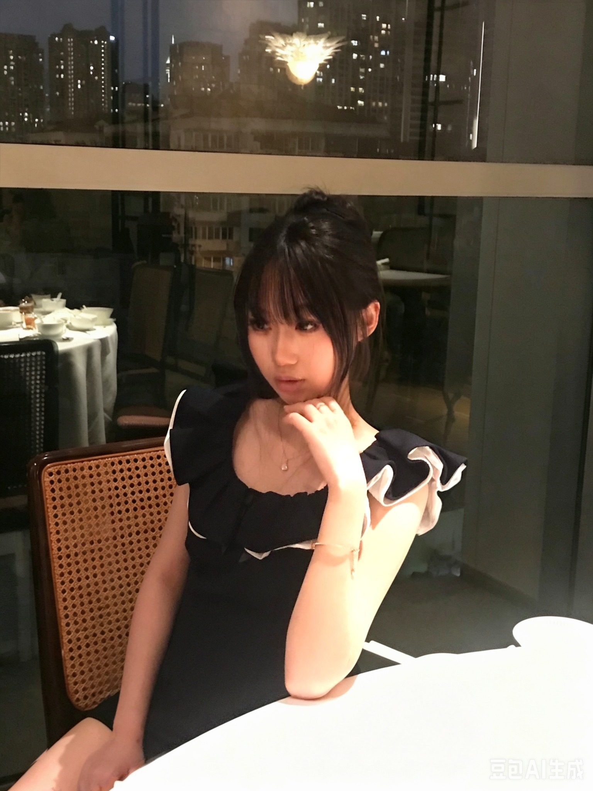

Curious learner, aspiring Business & Economics student, and passionate community builder who believes meaningful leadership begins with empathy, collaboration, and the courage to try something new.
I'm Farrah Yang, a rising senior in high school in Shanghai, China. I enjoy challenging myself by exploring different interests and stepping outside my comfort zone. One of the activities I'm most involved in is Model United Nations, where I enjoy discussing global issues and learning from different perspectives. I also founded the first Baking Club at my school because I wanted to create a welcoming community where people could connect through baking and kindness.
Outside of school, I enjoy playing tennis and floorball, which keep me active while teaching me resilience, teamwork, and discipline. As I prepare for college, I look forward to studying Business and Economics, meeting people from diverse backgrounds, exploring innovative ideas, and continuing to grow as both a student and a leader.
I believe growth happens when we challenge ourselves to embrace unfamiliar experiences with curiosity and determination. Whether presenting solutions to international issues through Model United Nations, leading collaborative projects, or learning from victories and setbacks in sports, I strive to approach every opportunity with confidence, empathy, and an open mind. My passion for Business and Economics comes from a desire to understand how people, organizations, and ideas create meaningful impact in communities around the world.
My interests in public speaking, problem solving, athletics, and baking have each shaped a different part of who I am. Together, they have taught me that leadership is not simply about directing others—it is about creating opportunities, inspiring collaboration, and helping people reach shared goals. As I continue my academic journey, I hope to combine analytical thinking with creativity to become a thoughtful leader who contributes positively both inside and outside the classroom.
Throughout high school, I have actively sought opportunities to build communities and encourage collaboration. As Captain of both the Baking Club and Model United Nations Club, I organize events, mentor members, and foster welcoming environments where students feel confident sharing ideas and developing new skills. Founding my school's first Baking Club was especially meaningful because it transformed a personal hobby into a space where creativity, friendship, and kindness could flourish.
Beyond academics, I serve as a team leader on my school's floorball team while also enjoying tennis. These experiences have strengthened my communication, adaptability, and resilience, teaching me that success is built through teamwork, trust, and consistent effort. Together, my leadership roles and extracurricular activities have inspired me to pursue Business and Economics with the goal of creating positive impact through collaboration, innovation, and service.
Founded the first Baking Club at school to create a welcoming community centered around creativity, friendship, and kindness.
Led discussions, conferences, and collaborative problem-solving while exploring international affairs and diplomacy.
Developed teamwork, communication, and resilience by leading teammates both during training and competition.
Preparing to study Business & Economics while continuing to explore leadership, entrepreneurship, and global collaboration.
Thank you for visiting my personal website. I'm always excited to learn, collaborate, and connect with people who share a passion for leadership, innovation, and making a positive impact.